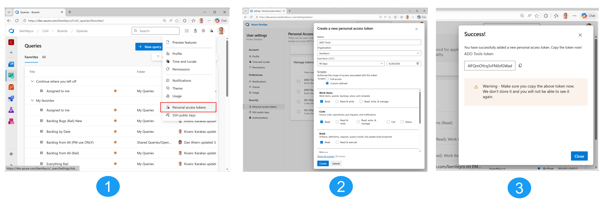

ADO Tools
Azure DevOps Productivity Suite - User Guide
ADO Tools is a Windows desktop application that helps you work with Azure DevOps more efficiently. It brings together work item browsing, intelligent search, attachment downloads, and software build management into a single, modern interface.
The application has three main tabs:
| Tab | What it does |
|---|---|
| Work Items | Browse Azure DevOps queries, search across your backlog using AI-powered semantic search or keyword matching, download work item attachments, and find similar work items. |
| Software Downloads | List available builds from Azure DevOps pipelines, download artifacts, and install or update software with one click. |
| Settings | Configure your Azure DevOps connection, set download folders, and build/manage the search index. |
 The main ADO Tools window with the three tab headers: Work Items, Software Downloads, and Settings.
The main ADO Tools window with the three tab headers: Work Items, Software Downloads, and Settings.
Getting Started
First Launch
When you open ADO Tools for the first time, you need to configure your Azure DevOps connection. Navigate to the Settings tab to get started.
Setting Up Your Connection
- Go to the Settings tab.
- Enter your Azure DevOps Organisation name (e.g.,
myorg). - Enter your default Project name (e.g.,
civil). - Paste your Personal Access Token (PAT) into the password field.
- Click Validate Connection to test. A green success message confirms it is working.
 The Connection card with Organisation, Project, and PAT fields, showing a green validation message.
The Connection card with Organisation, Project, and PAT fields, showing a green validation message.
How to create a PAT:
- Open your browser and go to https://dev.azure.com/bentleycs.
- Click your profile icon (top-right corner) and select "Personal access tokens". Or go directly to: https://dev.azure.com/bentleycs/_usersSettings/tokens.
- Click "+ New Token".
- Give it a name (e.g.,
ADO Tools), set an expiration date, and select the following scopes:- Work Items - Read
- Build - Read
- Code - Read
- Click Create.
- Copy the token immediately - you will not be able to see it again. Paste it into the PAT field in ADO Tools Settings.

How to navigate to the PAT page and create a new token in Azure DevOps. (Click to enlarge)Setting Up Download Folders
You need to configure two download folders:
| Folder | Used for |
|---|---|
| Work Items Download Folder | Attachments downloaded from work items (one subfolder per work item). |
| Software Download Folder | Build artifacts (ZIPs and extracted setup files) from Software Downloads. |
Click the folder icon next to each path to open a folder picker, or type the path directly.
 The Download Paths card with both folder fields and Browse buttons.
The Download Paths card with both folder fields and Browse buttons.
Work Items
The Work Items tab is your primary workspace for browsing, searching, and downloading Azure DevOps work items and their attachments.
 The full Work Items tab showing the Connection bar, Query panel, toolbar, data grid, and status bar.
The full Work Items tab showing the Connection bar, Query panel, toolbar, data grid, and status bar.
Connecting to a Project
If your settings are already configured, ADO Tools automatically connects when you open the app and loads your query tree. You will see "Connected" next to the Connect button.
To connect manually or switch projects:
- Enter the Project name in the text box at the top (e.g.,
civil). - Click the blue Connect button.
- The query tree will populate with your Favorites and All Queries.
 The Connection bar showing the Project field, Connect button, and connection status.
The Connection bar showing the Project field, Connect button, and connection status.
Running Queries
After connecting, the Query panel shows your Azure DevOps queries organized into two groups:
- Favorites - Your personal and team favorited queries (expanded by default).
- All Queries - The complete query tree from your project (collapsed by default).
To run a query:
- Expand the query tree and click on a query to select it.
- Click the Read Items button (or double-click the query to collapse the tree first).
- The app fetches work items and displays them in the grid below.
 The query tree with Favorites expanded and a query selected, with the Read Items button on the right.
The query tree with Favorites expanded and a query selected, with the Read Items button on the right.
Smart Caching
When you run a query, ADO Tools uses intelligent caching to speed things up:
- The first time you run a query, all work items are fetched from the server.
- On subsequent runs, only new or changed items are re-fetched; the rest are loaded instantly from the local cache.
- Progress is shown in two phases: "Checking 50/200 items..." (comparing change dates) and "Fetching 5/12 items..." (downloading only what changed).
The Data Grid
Work items are displayed in a full-featured data grid. The grid header shows a context badge indicating what data is currently displayed:
| Badge Colour | Label | Meaning |
|---|---|---|
| Blue | Query: query name | Results from an Azure DevOps query. |
| Green | Search in "query name" | Keyword search within the current query results. |
| Purple | Backlog Search: "search term" | Semantic or keyword search across the full backlog index. |
| Orange | Similar to: #ID | Results from "Find Similar" - items similar to a specific work item. |
 The data grid header showing the context badge, item count, and filter/column picker buttons.
The data grid header showing the context badge, item count, and filter/column picker buttons.
Customising Columns
The columns displayed in the grid are dynamic - they match the fields returned by your query. You can customise which columns are visible:
- Click the column picker button (grid icon) in the top-right corner of the grid header.
- A flyout opens with checkboxes for every available field. Check or uncheck fields to show or hide columns.
- Click Reset to Default to restore the original column layout.
Column widths are resizable - drag the column borders to adjust. Your column choices and widths are saved separately for query mode and search mode, and persist between sessions.
 The column picker flyout with checkboxes for available fields.
The column picker flyout with checkboxes for available fields.
Filtering Rows
Click the filter button (funnel icon) in the grid header to open the filter flyout. You can filter by up to five fields simultaneously:
- Type - e.g., Bug, Product Backlog Item, User Story
- State - e.g., New, Active, Closed, Done
- Area Path
- Priority - e.g., 1, 2, 3, 4
- Assigned To
Each filter dropdown is populated with the actual values from your current data. A badge number appears on the filter button showing how many filters are active. Click Clear Filters to reset all filters at once.
 The filter flyout showing dropdowns for Type, State, Area Path, Priority, and Assigned To.
The filter flyout showing dropdowns for Type, State, Area Path, Priority, and Assigned To.
Sorting
Click any column header to sort the grid by that column. Click again to toggle between ascending and descending order. A small arrow indicator appears on the sorted column.
Highlighting Recent Items
The Highlight control in the left toolbar lets you visually mark recently created items. Enter a number of days (e.g., 5) and any work item created within that many days from today will be highlighted in blue.
 The data grid with recently created rows highlighted in blue.
The data grid with recently created rows highlighted in blue.
Downloading Attachments
To download attachments from one or more work items:
- Select one or more rows in the grid (hold Ctrl or Shift to multi-select).
- Click Download Selected in the toolbar. The button shows the selection count (e.g., "Download Selected (3)").
- The app creates a folder for each work item (named by its ID) inside your configured download folder.
- Attachments are downloaded into each folder, along with an HTML file linking back to the work item on Azure DevOps.
- When complete, a clickable folder link appears in the status bar to open the download location in Explorer.
 The status bar after a download, showing a clickable folder link.
The status bar after a download, showing a clickable folder link.
Download by Work Item ID
If you know the work item ID, you can download its attachments directly without loading a query:
- Enter the work item ID in the Work Item number box on the right side of the toolbar (e.g.,
2011414). - Click the download icon button next to it.
- The app fetches the work item from the API, downloads all attachments, and shows the folder link.
Opening Work Items in the Browser
Double-click any row in the data grid to open that work item in your default web browser on Azure DevOps.
Searching
ADO Tools provides two levels of search - searching within the current query results, and searching across your entire backlog using an AI-powered index. Both are accessed from the Work Items tab.
The Work Items tab has two sub-tabs at the top: Query and Search. Switch between them to access different search scopes.
Search Within Query Results
After running a query, a search box appears below the query tree on the Query sub-tab. This lets you search through the loaded results using keyword matching (BM25).
- Run a query to load work items.
- Type your search terms in the search box (e.g.,
crash report). - Press Enter or click the search icon to execute.
- Results are ranked by relevance, with BM25 scores shown in the Title column.
Click the clear button next to the search box to return to the full query results.
 The Query sub-tab with a search term entered and scored results in the grid.
The Query sub-tab with a search term entered and scored results in the grid.
Backlog Search
Switch to the Search sub-tab to search across your entire backlog index. This uses the semantic search index that you build from the Settings tab (see Building the Search Index).
- Click the Search sub-tab.
- Select a search mode from the dropdown (see Search Modes below).
- Type your search query and press Enter.
- Results appear in the grid with relevance scores.
Additional controls on the Search sub-tab:
| Control | Description |
|---|---|
| Exclude Done | Checkbox that filters out completed/closed/done items from results. |
| Top | Number of results to return (default: 30, max: 500). |
| Clear | Clears the search and returns to the previous query results. |
| Update | Fetches new/changed items from Azure DevOps and updates the search index incrementally. |
 The Search sub-tab with a search query entered and results displayed with relevance scores.
The Search sub-tab with a search query entered and results displayed with relevance scores.
Search Modes
The backlog search supports three modes, selected from the dropdown on the left:
| Mode | How it works | Best for |
|---|---|---|
| Hybrid (RRF) | Runs both Semantic and Keyword searches in parallel, then combines the rankings using Reciprocal Rank Fusion. Items found by both methods get boosted. | General use - the recommended default. Combines the strengths of both methods. |
| Semantic | Uses AI sentence embeddings to find items with similar meaning, even if they use different words. | Natural language queries like "application crashes when opening large DGN files". |
| Keyword (BM25) | Traditional keyword matching with TF-IDF weighting. Finds items containing the exact words you type. | Searching for specific terms or codes like "cant points" or "PGL elevation". |
Find Similar
The Find Similar feature finds work items that are similar to a specific item - useful for finding duplicates or related issues.
- Enter a work item ID in the Work Item field (or select a row in the grid - the ID is filled automatically).
- Click Find Similar (Cache).
- The app searches the backlog index for similar items using both semantic and keyword matching.
- The source item appears at the top of the results tagged with [Source] and highlighted in orange.
- Similar items are listed below with relevance scores (e.g., "[82%]").
 Find Similar results with the source item highlighted in orange at the top.
Find Similar results with the source item highlighted in orange at the top.
Suggestions and History
Both search boxes (Query search and Backlog search) provide intelligent auto-suggestions:
- Search History - Your recent searches appear at the top, prefixed with a clock icon. Up to 10 entries are remembered.
- Vocabulary Completions - As you type, the search box suggests terms from the index vocabulary that match what you are typing.
Click into an empty search box to see your recent history. Start typing to see both history matches and vocabulary suggestions.
 The search box with the suggestion dropdown showing recent history and vocabulary completions.
The search box with the suggestion dropdown showing recent history and vocabulary completions.
Building the Search Index
Before you can use Backlog Search or Find Similar, you need to build a search index. This is a one-time setup (with incremental updates afterward).
From the Settings tab (recommended for first-time setup):
- Go to the Settings tab.
- In the Search Index card, set the Iteration Path to limit which work items are indexed (e.g.,
Civil\OpenCivil Designer\Backlog). Leave empty to index everything. - Set the Index Cutoff Date - only items created after this date will be indexed.
- Click Update Index. Progress is shown as items are fetched and embedded.
- Once complete, the status shows the number of items indexed.
 The Search Index card with Iteration Path, Cutoff Date, cache status, and the Update Index / Force Rebuild buttons.
The Search Index card with Iteration Path, Cutoff Date, cache status, and the Update Index / Force Rebuild buttons.
From the Work Items tab (quick update):
Click the Update button on the Search sub-tab to incrementally update the index without leaving the Work Items tab.
Force Rebuild:
The Force Rebuild button on the Settings tab deletes the entire cache and re-indexes everything from scratch. This requires a two-click confirmation (the button changes to "Confirm Rebuild?" for 5 seconds - click again to confirm, or wait for it to cancel).
Software Downloads
The Software Downloads tab lets you browse, download, and install software builds from Azure DevOps pipelines.
 The Software Downloads tab with Product Selection, Build List, Install Options, and Activity Log.
The Software Downloads tab with Product Selection, Build List, Install Options, and Activity Log.
Product Selection
The Product Selection card at the top-left lets you choose which software product to work with. Each product is mapped to an Azure DevOps pipeline definition ID and project.
Several products come pre-configured. When you select a product from the dropdown, the Def. ID and Project fields update automatically.
Managing Product Definitions:
- Add (+) - Opens a dialog to add a new product definition with a name, definition ID, and project.
- Remove (-) - Removes the currently selected product from the list.
- If you manually edit the Def. ID or Project fields, your changes are saved for that product.
 The Product Selection card with product dropdown, Def. ID, Project, and Add/Remove buttons.
The Product Selection card with product dropdown, Def. ID, Project, and Add/Remove buttons.
Loading Builds
- Select a product from the dropdown.
- Set the build count (how many recent builds to fetch, default: 30).
- Click Load Builds.
- The build list populates with columns: Product, Version, Result, and Finish Time.
Versions from the latest major version are highlighted in a different colour to help you quickly identify the newest releases. Build results are colour-coded (green for succeeded, red for failed).
Filtering Builds:
Use the Filter builds search box above the build list to narrow down builds by version number or text.
 The Build List card with builds loaded, colour-coded results, and the filter box.
The Build List card with builds loaded, colour-coded results, and the filter box.
Run Update (Download, Extract, Install)
The Run Update button performs the complete update workflow:
- Download - Downloads build artifact ZIPs from Azure DevOps. Progress shows download speed and size.
- Extract - Extracts the ZIP contents to a subfolder.
- Uninstall - If a matching version is already installed, it is uninstalled first (detected automatically from the Windows Registry).
- Install - Runs the extracted setup executable in quiet mode.
 The download progress panel showing size, speed, progress bar, and the Stop button.
The download progress panel showing size, speed, progress bar, and the Stop button.
Install Options:
| Option | Description |
|---|---|
| Download Only | When toggled ON, only downloads and extracts artifacts - skips uninstall and install steps. |
| Clean Uninstall | When toggled ON, performs additional cleanup of leftover files and folders after the standard MSI uninstall. |
Smart Download:
If an artifact ZIP already exists on disk, the app compares the local file size with the server size. If they match and the ZIP is valid, you are asked whether to re-download or reuse the existing file, saving time on large downloads.
Cancelling a Download:
Click the Stop button (appears during downloads) to cancel. The download stops gracefully after the current chunk completes.
Download Only Mode
Toggle Download Only ON if you just want to download and extract the build without installing it. This is useful when you want to:
- Download a build to share with someone else.
- Inspect the build contents before installing.
- Download on one machine and install on another.
Viewing and Managing Installed Software
Click Installed Software (at the top-right of the Build List card) to open a dialog showing all Bentley software installed on your machine. The dialog shows:
- Product name and version number for each installed product.
- An Uninstall button to remove any selected product.
- A Clean Uninstall checkbox for thorough removal.
 The Installed Bentley Software dialog listing installed products with Uninstall options.
The Installed Bentley Software dialog listing installed products with Uninstall options.
Activity Log
The Activity Log panel at the bottom-right records all operations with timestamped messages. Each log entry has a contextual icon (info, progress, success, error).
During downloads, progress messages update the last entry in-place rather than creating new lines, keeping the log clean and readable.
An installer info bar appears at the bottom whenever Windows Installer is running, showing elapsed time.
Click the trash icon to clear the log.
 The Activity Log panel showing timestamped log entries with contextual icons.
The Activity Log panel showing timestamped log entries with contextual icons.
Settings
The Settings tab is organized into four cards across two columns. Your settings are saved automatically when you leave the Settings tab or close the application.
 The Settings tab showing Search Index, Connection, Download Paths, and About cards.
The Settings tab showing Search Index, Connection, Download Paths, and About cards.
Azure DevOps Connection
The Connection card (top-right) contains:
| Field | Description | Example |
|---|---|---|
| Organisation | Your Azure DevOps organisation name. | myorg |
| Default Project | The default project used across all tabs. | civil |
| Personal Access Token | Your PAT (stored securely in a password field). | (hidden) |
Click Validate Connection to test. The result appears as a colour-coded info bar:
- Green - Connection successful.
- Red - Authentication failed, access denied, or organisation not found.
- Yellow - Missing required fields.
Search Index
The Search Index card (top-left) configures and manages the AI search index:
| Field/Button | Description |
|---|---|
| Iteration Path | Limits indexing to a specific area/iteration path. Leave empty to index all work items in the project. |
| Index Cutoff Date | Only items created after this date are indexed. Helps avoid indexing very old, irrelevant items. |
| Update Index | Incrementally updates the index - fetches only new or changed items since the last build. Fast for routine updates. |
| Force Rebuild | Deletes the entire cache and re-indexes from scratch. Requires two-click confirmation. |
Download Paths
The Download Paths card (full-width, bottom) has two folder settings:
| Path | Used by |
|---|---|
| Work Items Download Folder | Work Items tab - where attachment downloads are saved (one subfolder per work item ID). |
| Software Download Folder | Software Downloads tab - where build artifacts are downloaded and extracted. |
Each field has a Browse button that opens a folder picker dialog.
About
The About card shows the application name, version number, and author contact information.
Tips and Shortcuts
| Action | How |
|---|---|
| Open work item in browser | Double-click a row in the data grid. |
| Select multiple work items | Hold Ctrl and click rows, or Shift+click for a range. |
| Collapse the query tree | Double-click a query to collapse the tree into a compact label. |
| Expand the query tree | Click the collapsed query label. |
| Run a search | Type in the search box and press Enter. |
| View search history | Click into an empty search box to see recent searches. |
| Quickly find similar items | Select a row in the grid, then click Find Similar (Cache). |
| Resize columns | Drag the column borders in the data grid header. |
| Cancel a download | Click the Stop button during a Software Downloads operation. |
| Open downloaded files | Click the folder link in the status bar after a download completes. |
Troubleshooting
I cannot connect - "Could not reach the server"
- Check your internet connection.
- Verify the Organisation name in Settings is correct.
- Make sure you can access
https://dev.azure.com/{your-org}in your browser.
Authentication failed
- Your PAT may have expired - create a new one at
https://dev.azure.com/{your-org}/_usersSettings/tokens. - Ensure the PAT has Read access to Work Items, Build, and Code scopes.
- Use the Validate Connection button on the Settings tab for a detailed error message.
Search is disabled / "No cache found"
- You need to build the search index first. Go to Settings > Search Index > Update Index.
- Make sure the ONNX embedding model files (
model.onnxandvocab.txt) are present in theAssets/Modelsfolder.
Search results seem inaccurate
- Try switching search modes - Keyword (BM25) works better for exact technical terms, Semantic for natural language descriptions.
- Make sure the search index is up to date - click Update on the Search sub-tab or Update Index in Settings.
- Check the Iteration Path and Cutoff Date in Settings - your target items might be outside the indexed scope.
Setup file not found during software update
- The app looks for an
.exefile containing both "setup" and the product name in the extracted files. - If the build artifacts have a different naming convention, use Download Only mode and run the installer manually.
"No matching installed version found" during update
- This is informational - it means there is no previous version to uninstall. The app proceeds directly to installation.
Download was cancelled or failed
- Click Run Update again - the app detects existing ZIP files and offers to reuse them if they are valid.
- Check the Activity Log for specific error messages.
Window size or columns are not being remembered
- Settings are saved to
%LocalAppData%\ADO_Tools_WinUI\settings.json. Make sure this folder is writable. - If the file becomes corrupted, delete it and the app will recreate it with defaults on next launch.
ADO Tools - Azure DevOps Productivity Suite
For questions or feedback, contact kivanc.karakas@bentley.com